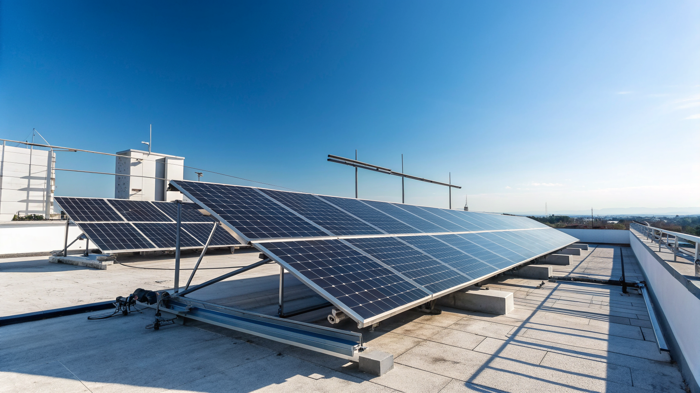

Automazione vs Manualità nel Fotovoltaico: Come Free Energy PRO Rivoluziona Sopralluoghi e Preventivi

Automazione nel Fotovoltaico: Supera il Divario Competitivo tra Metodi Manuali e Digitali con Free Energy PRO
- Il ritardo tecnologico penalizza installatori e aziende energivore, allungando i sopralluoghi e rallentando preventivi.
- Free Energy PRO introduce un sistema automatizzato con PV Planner CAD satellitare, riducendo i tempi e aumentando l’accuratezza.
- La digitalizzazione rappresenta la chiave per conquistare efficienza, velocità e trasparenza nel mercato del fotovoltaico.
Analisi approfondita della notizia e delle implicazioni operative
Nel settore del fotovoltaico e dell’efficientamento energetico, la crescente domanda di soluzioni rapide ed efficaci mette in evidenza un problema strutturale persistente: la dipendenza da metodi tradizionali nelle fasi di sopralluogo e preventivazione. Questi processi manuali non solo richiedono tempo prezioso, ma rischiano anche di compromettere l’accuratezza dei dati, con conseguenti errori di dimensionamento e stime errate della produzione energetica.
Le aziende che continuano a fare affidamento su misurazioni manuali o su software poligonali non integrati si trovano a fronteggiare un rallentamento delle attività e a dover sostenere maggiori costi operativi. Questo scenario è un freno all’innovazione e un serio disincentivo per la scalabilità, soprattutto in un mercato sempre più competitivo dove la velocità e l’affidabilità sono divenute indispensabili.
Le conseguenze e i costi di non agire
I sopralluoghi svolti con metodi tradizionali si traducono spesso in tempi troppo estesi: un tecnico deve fisicamente misurare ogni falda, calcolare manualmente l’area disponibile e stimare i moduli fotovoltaici, attività che richiede ore e genera inevitabili errori di calcolo. Questo rallenta l’intero ciclo di vendita e riduce la capacità dell’azienda di rispondere prontamente a nuove opportunità.
La lentezza nella produzione dei preventivi impatta negativamente sulla percezione del cliente, che in molti casi si rivolge a concorrenti più rapidi. Inoltre, la mancanza di automazione genera costi elevati legati alle ore lavoro e al rischio di rilavorazioni per errori. In un settore dinamico e in espansione, questi colli di bottiglia limitano la competitività e l’espansione di mercato.
I rischi non sono solo economici: la scarsa precisione nell’analisi può compromettere la progettazione degli impianti, causando inefficienze di performance e insoddisfazione finale dell’utente, con potenziali ripercussioni legali o reputazionali.
Come Free Energy PRO risolve il problema
Free Energy PRO, il SaaS sviluppato da RM Studio, si presenta come la risposta tecnologica avanzata a queste criticità. Grazie al potente modulo PV Planner CAD Satellitare, gli installatori e le aziende di efficientamento energetico possono effettuare sopralluoghi virtuali rapidi e precisi, utilizzando immagini satellitari ad alta definizione per tracciare con accuratezza le falde del tetto.
Il software consente di ruotare i moduli fotovoltaici, adattandoli perfettamente all’inclinazione e alla morfologia del tetto, calcolando in modo automatico la producibilità secondo i dati ufficiali PVGIS. Questo permette di generare preventivi precisi, completi e brandizzati, pronti per essere esportati in PDF e condivisi immediatamente con i clienti.
L’integrazione dei dati satellitari riduce drasticamente i tempi del sopralluogo e l’errore umano, liberando risorse preziose e garantendo una maggiore affidabilità nella fase di progettazione. Free Energy PRO si configura come una piattaforma che semplifica il workflow quotidiano, permettendo di rispondere alle richieste con tempestività e di aumentare la soddisfazione del cliente finale.
| Aspetti | Gestione Tradizionale | Con Free Energy PRO |
|---|---|---|
| Tempi Sopralluogo | Ore o giorni, necessità di misurazioni sul campo | Minuti, sopralluoghi basati su immagini satellitari di ultima generazione |
| Precisione Calcolo Moduli | Variazioni dovute a stime manuali, errori frequenti | Calcolo automatico, rotazioni personalizzate, dati PVGIS integrati |
| Generazione Preventivi | Procedura manuale, tempi lunghi, presenza di errori in preventivi cartacei o digitali non integrati | Export PDF brandizzato, velocità e professionalità con template pronti |
| Costo Operativo | Alti per ore uomo e rilavorazioni | Riduzione costi grazie all’automazione e accuratezza dei dati |
| Competitività e Scalabilità | Limitata per lentezza e sforzo manuale | Alta, grazie a processi digitali e capacità di gestire più richieste simultaneamente |
💡 Ti è stato utile questo approfondimento?
Condividilo con un collega o un amico del settore Installatori Fotovoltaico e Aziende di Efficientamento Energetico a cui potrebbe interessare!
FAQ
D: Free Energy PRO richiede particolari competenze tecniche?
R: No, l’interfaccia è stata progettata per essere intuitiva, con tutorial integrati per velocizzare l’apprendimento anche da parte degli operatori con competenze base.
D: Quali dati utilizza il software per calcolare la produzione?
R: Free Energy PRO integra il database PVGIS, uno strumento ufficiale per la stima della produzione energetica fotovoltaica basato su dati satellitari e meteorologici aggiornati.
D: È possibile personalizzare i preventivi con il proprio marchio aziendale?
R: Sì, la funzione di esportazione include template per PDF completamente personalizzabili con il branding aziendale, garantendo comunicazioni professionali e coerenti.
Inizia Subito
1.000 crediti gratuiti all'iscrizione. Pacchetto Start da €199 per 10.000 crediti.
Fonti Ufficiali e Risorse Esterne
Scopri l'Intelligenza Artificiale per la tua attività
Ottimizza i processi e aumenta le vendite con le soluzioni B2B di RM Studio.
Scopri Free Energy PRO